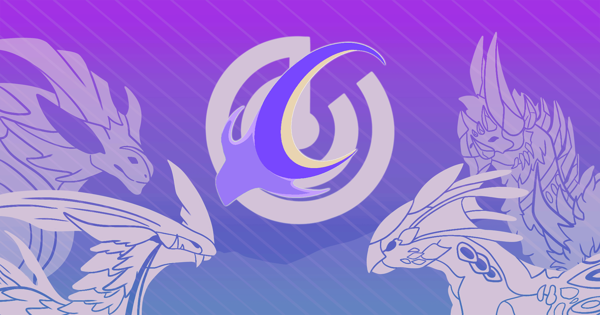

Playing The Game
Playing the game is easy, you get one starter creature to play with. You explore the map as your creature gets older, press H to sense fresh water sources you can drink from and food. There are bushes for the herbivores, but carnivores need to kill other creatures for food or get in a pack so they can be supported while young. All creatures get more powerful as they age up. Once you reach 100 age, which is full age you can choose to be Elder. There is also a chance that you will get a glimmer creature, which are extrememly rare.
☰ Where Should I Go Next?